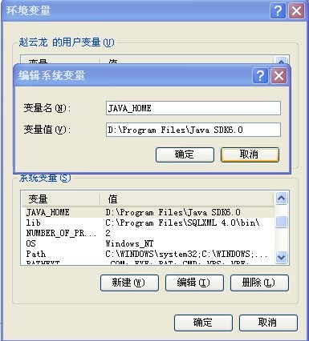
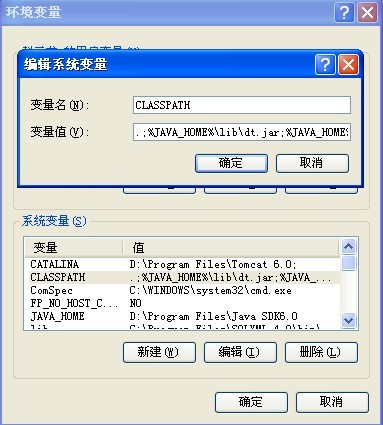
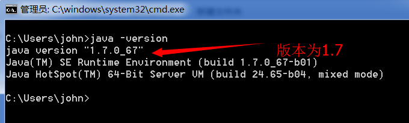

假设你的jdk安装在:F:\Program Files\Java\jdk1.6.0_07;
1 JAVA_HOME = F:\Program Files\Java\jdk1.6.0_07;
2 PATH = %JAVA_HOME%\bin;%JAVA_HOME%\jre\bin;或者是直接 %JAVA_HOME%\bin;

3 CLASSPATH=.;%JAVA_HOME%\lib\dt.jar;%JAVA_HOME%\lib\tools.jar;
按windows+r打开运行，在运行框输入cmd打开黑窗口
1.输入java -version
出现表示成功
①随便打开一个文件夹
② 文件夹→组织→文件夹搜索选项→查找→去掉（隐藏已知文件夹类型的括展名）
打开UltraEdit→高级→备份→选择不备份
1. Cd 目录名称，进入目录
2. Cd .., 退回上级目录
3. cls清空
4. Dir, 显示文件或目录
5. Del 文件名, 删除文件